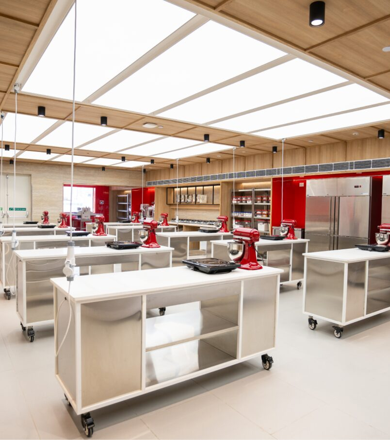
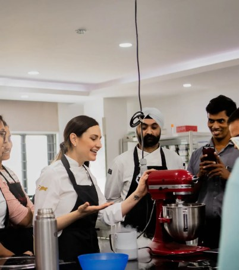
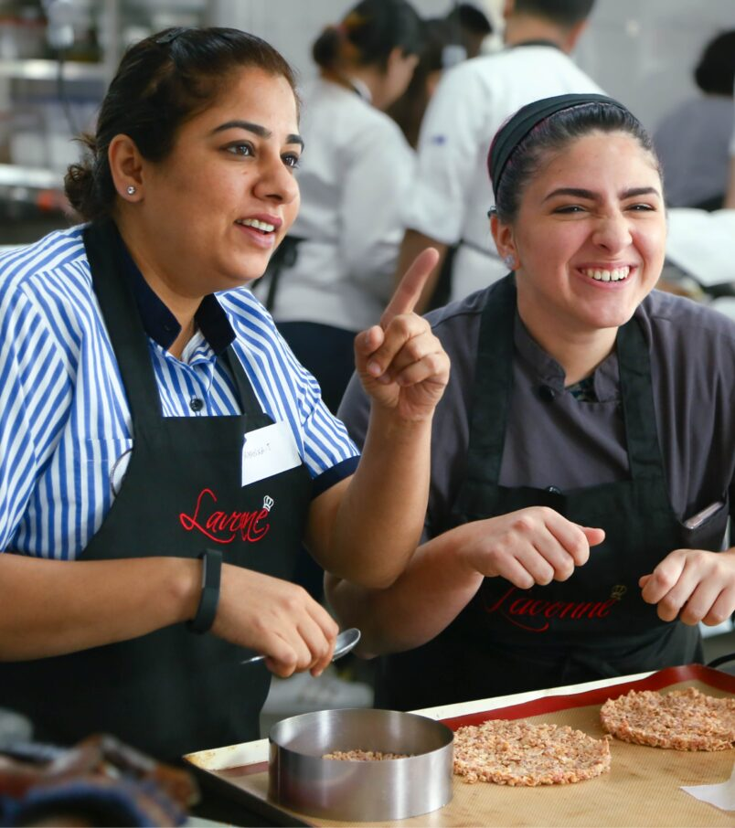
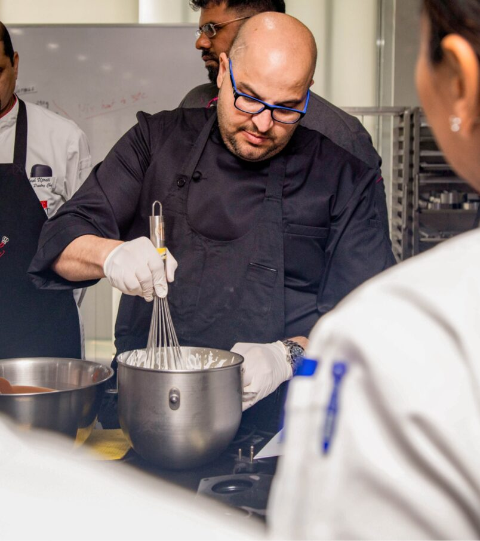

Facility
Built like a working kitchen
Production grade equipment. Industry standard stations

Facility
Production grade equipment. Industry standard stations

Syllabus
Every cohort learns something the last one didn't. This year's masterclasses become next year's curriculum.

Immersion
Six weeks rotating through the cafe, the production kitchen, and the pastry counter. Your work goes out the door.

Certification
City & Guilds, London. The only baking academy in India with this recognition. Plus ISO accreditation and a Forbes-listed founder.

Visiting chefs
Antonio Bachour, every two years. Other international chefs throughout the year. Masterclasses become curriculum.